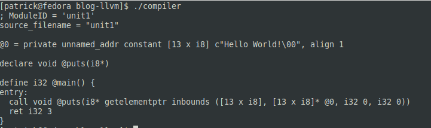

Hello World in LLVM
Welcome everyone! In my last post, I introduced you to LLVM- the framework and the concept behind it. Hopefully it made some sense, but I imagine it won't fully make sense until we write some code. In this post, we are going to generate a "Hello World" program in C++ using the LLVM API.
This tutorial will walk you through the complete process of generating IR, generating assembly, and creating a final executable binary. This will also demonstrate the core basics of LLVM. Although I hope to do some additional tutorials in the future, this will provide a good starting point to allow you to create your own LLVM-based compiler.
Setting Up
To generate LLVM IR, you will need three components: a context, a module, and a builder. These lines will do the trick:
std::unique_ptr<LLVMContext> context = std::make_unique<LLVMContext>();
std::unique_ptr<Module> mod = std::make_unique<Module>("unit1", *context);
std::unique_ptr<IRBuilder<>> builder = std::make_unique<IRBuilder<>>(*context);
The module and the context provide the base of the builder- they roughly represent a single translation unit (a source file). The IRBuilder, as its name implies, builds the actual IR.
You will notice in the source code that I actually have those three lines split up. In a real world program, creating them as global variables isn't the best idea, but for the sake of example, it is sufficient. This is because the context and module objects will be needed when we generated the assembly file. The builder technically doesn't need to be global, but I made it so because in a real application, you would want to split your codegen routines over multiple functions. A good organized way of doing this would be to put everything in a class or structure so it can be accessed by members and kept track of as needed.
Generating Functions
Okay, now that we have our context, module, and builder setup, we can start generating functions. In this program, we will need two functions:
extern void puts(char *str);
int main() {
// code, code, and more code
}
"Puts" is part of the C standard library, so we need to indicate to the linker that we wish to use it. Technically, "puts" returns an integer, but using void won't create any issues. "Puts" would be an example of an external declaration, and "main" would be a regular function declaration.
Let's declare "puts" first:
Type *putsRetType = Type::getVoidTy(*context);
Type *putsArgType = Type::getInt8PtrTy(*context);
FunctionType *putsFT = FunctionType::get(putsRetType, putsArgType, false);
Function *putsFunc = Function::Create(putsFT, Function::ExternalLinkage, "puts", mod.get());
The first thing we have to do is to create two type objects: the return type, and the argument type. The return type is void, while the argument type is a char pointer (you will remember that a char is nothing more than an 8-bit integer). After that, we create the function signature (represented by the FunctionType class). The function type holds the return and argument types. Finally, we create the actual function, which should be self-explanatory.
Now, we can create the main function:
Type *funcRetType = Type::getInt32Ty(*context);
FunctionType *FT = FunctionType::get(funcRetType, false);
Function *func = Function::Create(FT, Function::ExternalLinkage, "main", mod.get());
You will notice that it is essentially the same as the "puts" function, except that we have no arguments.
At this point, you're probably wondering how LLVM knows whether is an extern function or a regular function definition. The difference lies in whether or not there is a function body. The main function will have a body, whereas the "puts" function will not. Because there is no body, LLVM assumes that it is defined elsewhere, declares it as extern, and moves on.
See the documentation for the in-depth details.
Function Body
Now we can move on to the function body. In this particular function, we only need two statements:
puts("Hello World!");
return 3;
If you haven't read my previous post, now would be a good time to do it. You will remember that the hierarchy of LLVM IR is roughly Module -> Function -> BasicBlock -> Instruction. Basic blocks are structures that hold instructions. Each function has a list of basic blocks, which makes up the body. Because we only have two statements, neither of which are control-flow related, we will only have one basic block in our IR.
The basic block is created like this:
BasicBlock *mainBlock = BasicBlock::Create(*context, "entry", func);
builder->SetInsertPoint(mainBlock);
Once again, this should be largely self-explanatory. The basic block doesn't have to be named "entry", but I did so for readability. You will notice that our builder object finally comes into play. When we create the basic block, especially since this is the first block of the function, we need to tell the builder where to insert subsequent instructions. The "SetInsertPoint" does just that.
Now, let's generate our "puts" call:
std::vector<Value *> args;
Value *str = builder->CreateGlobalStringPtr("Hello World!");
args.push_back(str);
Function *callee = mod->getFunction("puts");
builder->CreateCall(callee, args);
There are a few things to note here. First, is our argument, which is a single string. Strings are not local objects of the function; strings are global memory locations.You will remember that a string is nothing more than a string of characters. However, these characters have to go somewhere. On Linux, these are declared in the .data section. When a variable or a statement in a function wishes to use them, it creates a pointer to that memory location. The "CreateGlobalStringPtr" function does the task of creating a string and returning the pointer to it.
The next two lines create the actual call. The "Function *callee…." line is actually unnecessary for this example; I could have just passed the "putsFunc" object we created above into "CreateCall". In a real compiler, however, this would be bad practice. In order to do this, you would have to have some sort of table or map to keep track of all these objects. LLVM already does that for you, so its just as easy to find the call by looking it up.
Finally, let's generate our return statement:
Value *retValue = builder->getInt32(3);
builder->CreateRet(retValue);
This is very straightfoward, so I won't spend much time here. The first line creates an integer constant; you can change this to whatever you want. The second line creates the actual return call.
You may have noticed that everything seems to be a "Value". This is the base class for all LLVM instructions. As a result, they can be used fairly interchangebly. In the return statement, you could pass in the result of a function call, a variable, the result of a math operation, or anything else.
Viewing IR
There is a final line below the return statement code:
mod->print(errs(), nullptr);
When you build and run the program, LLVM will generate a textual, human-readable representation of LLVM IR, and print it out to the screen. This is very useful, both in debugging and understanding LLVM as a whole. See below for how it looked on my system:

Generating Assembly and Building
Now that our IR is built, we can spit it out to an assembly file. This is done in the "assemble" function near the bottom of our program. This function is complex, especially if you are new to LLVM and the world of compilers as a whole, so I'm not going to go into it. I commented each section to give a general idea of what it does.
If you go back to the main function, between the "assemble" call and "return 0" statement, you will notice this line:
system("gcc first.s -o first");
When you run this program, LLVM will generate an assembly file ("first.s"). The assembly file is fully compatible with the GNU toolchain, so you can assemble and link in one step by passing it to GCC. Our tiny program is fully compatible with the C library, which is needed for "puts" to work.
Please note that using "system" is really bad practice. However, for simple debugging work or early development, its fine. Just make sure you take it out and use proper fork-exec calls in your production code.
Conclusion
This concludes our introduction to LLVM. If all goes well, this little C++ program should generate a small executable, which will display "Hello World!" and return 3 (you can check by running "echo $?" after running the hello-world executable).
This tutorial only scratched the surface of what you can do with LLVM, but it also laid the foundation. These are the core building blocks you need to write an LLVM-based compiler. In future tutorials, I hope to go into more depth and cover other areas, such as generating conditionals and loops.
Thanks for reading!
Complete Code
Here is the complete code. This code is in the public domain, so use to your heart's content.
To compile:
clang++ -g -O3 compiler.cpp `llvm-config --cxxflags --ldflags --system-libs --libs core` -o compiler
The code:
#include <iostream>
#include <vector>
#include "llvm/IR/IRBuilder.h"
#include "llvm/IR/LLVMContext.h"
#include "llvm/IR/Module.h"
#include "llvm/IR/BasicBlock.h"
// Needed to generate assembly
#include "llvm/Support/FileSystem.h"
#include "llvm/Support/Host.h"
#include "llvm/Support/raw_ostream.h"
#include "llvm/Support/TargetRegistry.h"
#include "llvm/Support/TargetSelect.h"
#include "llvm/Target/TargetMachine.h"
#include "llvm/Target/TargetOptions.h"
#include "llvm/IR/LegacyPassManager.h"
using namespace llvm;
std::unique_ptr<LLVMContext> context;
std::unique_ptr<Module> mod;
std::unique_ptr<IRBuilder<>> builder;
void assemble();
int main(int argc, char *argv[]) {
// Setup everything
context = std::make_unique<LLVMContext>();
mod = std::make_unique<Module>("unit1", *context);
builder = std::make_unique<IRBuilder<>>(*context);
// Create an extern declaration to puts
Type *putsRetType = Type::getVoidTy(*context);
Type *putsArgType = Type::getInt8PtrTy(*context);
FunctionType *putsFT = FunctionType::get(putsRetType, putsArgType, false);
Function *putsFunc = Function::Create(putsFT, Function::ExternalLinkage, "puts", mod.get());
// Create Function
Type *funcRetType = Type::getInt32Ty(*context);
FunctionType *FT = FunctionType::get(funcRetType, false);
Function *func = Function::Create(FT, Function::ExternalLinkage, "main", mod.get());
// Create the function body
BasicBlock *mainBlock = BasicBlock::Create(*context, "entry", func);
builder->SetInsertPoint(mainBlock);
// Call puts, and print "Hello World!"
std::vector<Value *> args;
Value *str = builder->CreateGlobalStringPtr("Hello World!");
args.push_back(str);
Function *callee = mod->getFunction("puts");
builder->CreateCall(callee, args);
// Return 3
Value *retValue = builder->getInt32(3);
builder->CreateRet(retValue);
//dump
mod->print(errs(), nullptr);
// Assemble and build
assemble();
// Compile
// Using system() is bad; I am using it for the sake of readability
system("gcc first.s -o first");
return 0;
}
// Generate assemble and build
void assemble() {
// We are going to generate for X86, so tell LLVM
LLVMInitializeX86TargetInfo();
LLVMInitializeX86Target();
LLVMInitializeX86TargetMC();
LLVMInitializeX86AsmParser();
LLVMInitializeX86AsmPrinter();
// Get the target triple so LLVM knows what to generate assembly for
std::string triple = sys::getDefaultTargetTriple();
mod->setTargetTriple(triple);
// Look up the target
std::string error;
auto target = TargetRegistry::lookupTarget(triple, error);
// Check for any errors with the target triple
if (!target) {
errs() << error;
return;
}
// Setup the target writer
auto CPU = "generic";
auto features = "";
TargetOptions options;
auto RM = Optional<Reloc::Model>();
auto machine = target->createTargetMachine(triple, CPU, features, options, RM);
mod->setDataLayout(machine->createDataLayout());
// Finally, generate assembly
std::string outputPath = "./first.s";
std::error_code errorCode;
raw_fd_ostream writer(outputPath, errorCode, sys::fs::OF_None);
if (errorCode) {
errs() << "Unable to open file: " << errorCode.message();
return;
}
legacy::PassManager pass;
auto outputType = CGFT_AssemblyFile;
if (machine->addPassesToEmitFile(pass, writer, nullptr, outputType)) {
errs() << "Unable to write to file.";
return;
}
pass.run(*mod);
writer.flush();
}